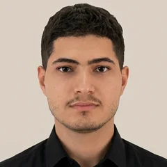

Djoud El Hak Belkhir
Computer vision and applied AI
I build computer vision and AI systems and take them all the way to the people who use them. At CERIST, I replaced a YOLO11m and DeepSORT pipeline with a 0.38M‑parameter detector and a motion-only tracker that analyse a sperm motility clip in 4.6 seconds on two CPU cores, and shipped them in a desktop application for a reproductive biology laboratory.
I also build LLM systems that run on a team's own GPUs: retrieval over code, agents that write and check their own tests, and the evaluation around them.
I am in the M2 Data, Knowledge and Hybrid AI at Université Paris-Saclay and looking for a 4 to 6 month end‑of‑studies internship from February 2027, in computer vision, AI for health or applied machine learning. Email me or read my CV.
Selected work
-
Sperm motility analysis that runs on a laboratory PC without a GPU, from the detector to the desktop application. Research internship at CERIST.
0.769 detection F1, against 0.690 for YOLO11m4.6 s per clip on two CPU cores, from 195 s
-
Retrieval over a code knowledge graph, an agent that writes requirement-tagged unit tests and proves them, and GPU sizing, measured on NASA's F´.
21 of 28 test gaps closed0.609 retrieval MAP±11% sizing error
-
MobileVLM V2 7B distilled into 3B on GQA. Team project of four; I did the distillation, training and analysis.
96.8% of teacher accuracy2.3× fewer parameters
-
A leakage-aware Vision Transformer and CNN benchmark on real landfill photos, and the Flutter app that runs the classifier on the phone.
93.86% macro-F1, ViT-B/16481 held-out images
Paper
SpermNet: CPU-only detection, tracking and kinematic grading of human sperm motility in phase-contrast video PDF
Djoud El Hak Belkhir. Manuscript, 2026.
Other projects
DZ-Tabib
Backend of a doctor appointment platform for Algeria.
AutoCare
Backend of a booking and repair-tracking app for a car workshop.
CROUS housing monitor
Headless-Chrome watcher that sends a Telegram alert when a student flat appears.
Commercia
Founder of an e-commerce project for Algerian sellers, incubated at ESTIN Up.
Experience
CERIST
Sept. 2025 – Feb. 2026Research intern, computer vision for medical imaging
Algérie Télécom
Sept. 2025Intern, network operations and support systems
Sonelgaz
July 2025Intern, information systems and IT infrastructure
Education
Université Paris-Saclay
2026 – 2027M2 Data, Knowledge and Hybrid AI
ESTIN, Béjaïa
2024 – 2026Engineering cycle, Artificial Intelligence and Data Science. Average 15/20, ranked 4th to 6th every year.
ESTIN, Béjaïa
2022 – 2024Preparatory cycle, Mathematics and Computer Science